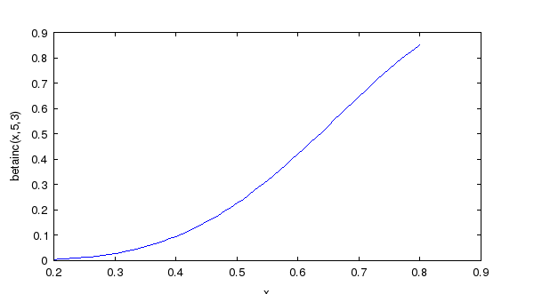

BETAINC Incomplete Beta Function
Section: Mathematical Functions
Usage
Computes the incomplete beta function. The betainc function takes 3 or 4 arguments
A = betainc(X,Y,Z)
A = betainc(X,Y,Z,tail)
where X is either a float or double array with elements in [0,1] interval, Y and Z are real non-negative arrays. tail specifies the tail of the incomplete beta function. If tail is 'lower' (default) than the integral from 0 to x is computed. If tail is 'upper' than the integral from x to 1 is computed. All arrays must be the same size or be scalar. The output vector A is the same size (and type) as input arrays.
Internals
The incomplete beta function is defined by the integral:
![\[ BetaI_x(a,b)=B_x(a,b)/B(a,b) where B_x(a,b) = \int_0^x t^{a-1} (1-t)^{b-1} dt for 0 <= x <= 1. For a > 0, b > 0 \]](form_59.png)
Example
Here is a plot of the betainc function over the range [.2,.8].
--> x=.2:.01:.8;
--> y = betainc(x,5,3);
--> plot(x,y); xlabel('x'); ylabel('betainc(x,5,3)');
which results in the following plot.
